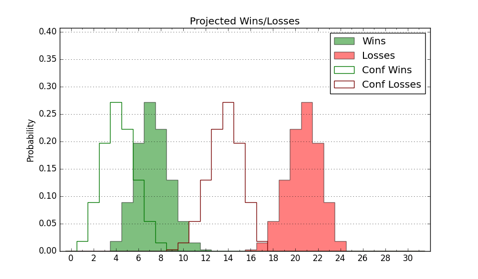

| Home | Game Probabilities | Conferences | Preseason Predictions | Odds Charts | NCAA Tournament |
| City: | Buffalo, New York | |
| Conference: | Mid-American (11th)
| |
| Record: | 1-6 (Conf) 4-13 (Overall) | |
| Ratings: | Comp.: -19.2 (340th) Net: -19.7 (339th) Off: 94.2 (341st) Def: 113.8 (311th) SoR: 0.0 (156th) |
| Remaining | ||||||
|---|---|---|---|---|---|---|
| Date | Opponent | Win Prob | Pred. | |||
| 1/28 | Central Michigan (229) | 33.9% | L 69-74 | |||
| 2/1 | Ball St. (278) | 45.2% | L 76-77 | |||
| 2/4 | @ Toledo (195) | 9.5% | L 73-90 | |||
| 2/11 | @ Northern Illinois (354) | 45.7% | L 75-76 | |||
| 2/15 | Bowling Green (285) | 47.5% | L 76-77 | |||
| 2/18 | Western Michigan (311) | 53.4% | W 76-75 | |||
| 2/22 | @ Ball St. (278) | 19.5% | L 71-82 | |||
| 2/25 | @ Central Michigan (229) | 13.1% | L 65-79 | |||
| 3/1 | Toledo (195) | 26.4% | L 78-85 | |||
| 3/4 | Miami OH (190) | 26.2% | L 74-82 | |||
| 3/7 | @ Akron (112) | 4.8% | L 69-92 | |||
| Previous | Game Score | |||||
| Date | Opponent | Win Prob | Result | Off | Def | Net |
| 11/4 | @Old Dominion (335) | 32.4% | W 83-82 | 15.3 | 0.9 | 16.2 |
| 11/11 | @Notre Dame (67) | 2.0% | L 77-86 | 6.4 | 12.4 | 18.7 |
| 11/14 | Bryant (153) | 20.0% | L 64-87 | -15.6 | 2.8 | -12.9 |
| 11/19 | @Vermont (256) | 16.2% | L 67-78 | 9.4 | -18.3 | -8.8 |
| 11/22 | Morgan St. (351) | 68.8% | W 82-73 | 6.0 | 1.9 | 7.8 |
| 11/25 | North Carolina A&T (331) | 60.1% | W 82-81 | -5.4 | 0.7 | -4.7 |
| 12/1 | @Penn St. (52) | 1.5% | L 64-87 | 9.0 | 1.4 | 10.5 |
| 12/7 | @St. Bonaventure (98) | 3.8% | L 55-65 | -0.6 | 15.3 | 14.7 |
| 12/19 | @Georgia (35) | 1.0% | L 49-100 | -9.9 | -21.0 | -30.9 |
| 12/29 | @Temple (125) | 5.3% | L 71-91 | -2.9 | 5.4 | 2.5 |
| 1/4 | @Miami OH (190) | 9.5% | L 79-93 | 17.0 | -13.7 | 3.2 |
| 1/7 | Ohio (167) | 22.2% | L 79-88 | -0.9 | 0.6 | -0.3 |
| 1/10 | Kent St. (157) | 20.6% | L 49-68 | -17.8 | 3.2 | -14.5 |
| 1/14 | @Bowling Green (285) | 21.0% | L 61-79 | -7.9 | -2.3 | -10.2 |
| 1/18 | @Western Michigan (311) | 25.2% | W 85-76 | 8.5 | 16.7 | 25.2 |
| 1/21 | Akron (112) | 14.6% | L 58-90 | -21.3 | -0.2 | -21.4 |
| 1/25 | @Eastern Michigan (310) | 24.6% | L 77-90 | 6.9 | -16.3 | -9.4 |
| Stats & Trends | |||||
|---|---|---|---|---|---|
| Current | Day | Week | Month | Season | |
| Composite | -19.2 | -0.8 | -2.7 | -2.7 | -4.2 |
| Comp Rank | 340 | -4 | -12 | -8 | -13 |
| Net Efficiency | -19.7 | -0.8 | -2.8 | -2.5 | -- |
| Net Rank | 339 | -2 | -10 | -10 | -- |
| Off Efficiency | 94.2 | +0.2 | -1.6 | -2.4 | -- |
| Off Rank | 341 | -- | -17 | -27 | -- |
| Def Efficiency | 113.8 | -1.0 | -1.2 | -0.0 | -- |
| Def Rank | 311 | -18 | -12 | +11 | -- |
| SoS Rank | 187 | -26 | -43 | -84 | -- |
| Exp. Wins | 7.3 | -0.4 | -1.0 | -1.5 | -1.5 |
| Exp. Conf Wins | 4.3 | -0.4 | -1.0 | -1.4 | -2.2 |
| Conf Champ Prob | 0.0 | -0.0 | -- | -0.2 | -0.7 |

| Advanced Stats | ||
|---|---|---|
| Stat | Value | Rank |
| Off Eff FG % | 0.481 | 257 |
| Off Ast Ratio | 0.139 | 211 |
| Off ORB% | 0.195 | 353 |
| Off TO Rate | 0.171 | 315 |
| Off FT Ratio | 0.316 | 220 |
| Def Eff FG % | 0.557 | 330 |
| Def Ast Ratio | 0.178 | 350 |
| Def ORB% | 0.290 | 208 |
| Def TO Rate | 0.135 | 271 |
| Def FT Ratio | 0.302 | 114 |